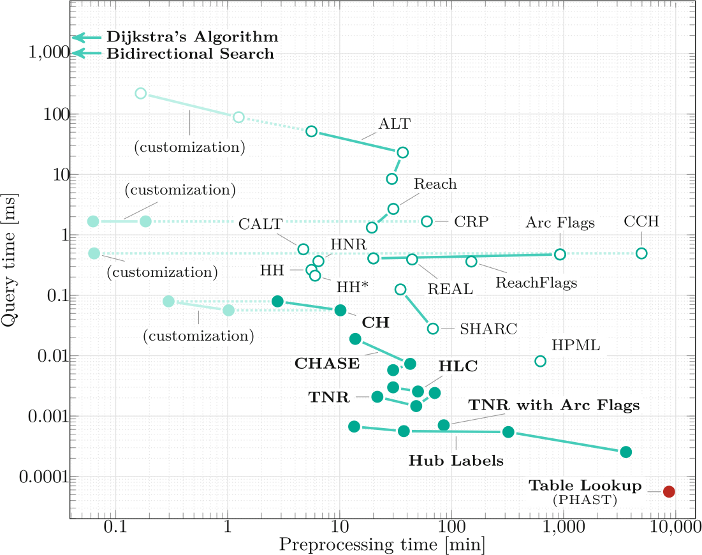
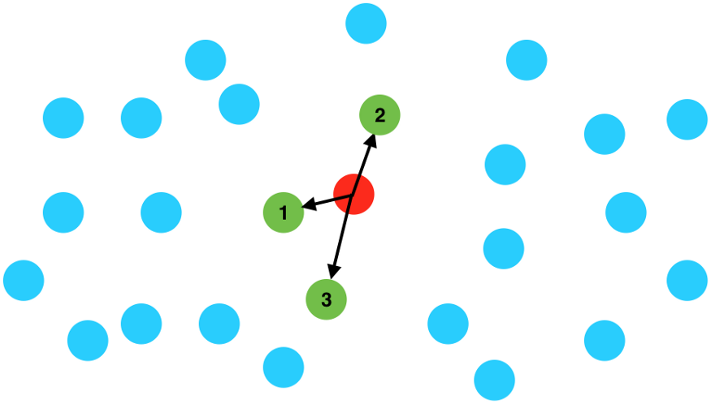
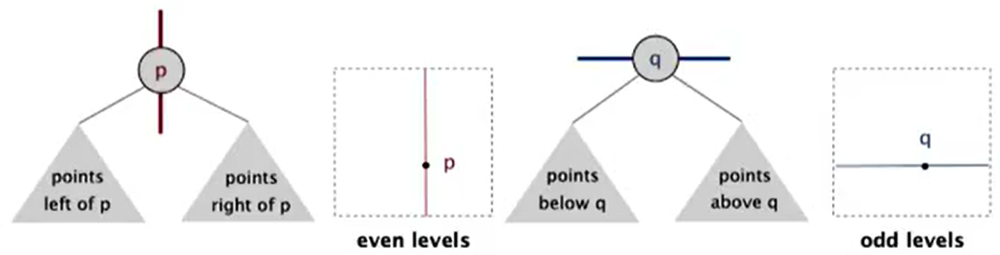
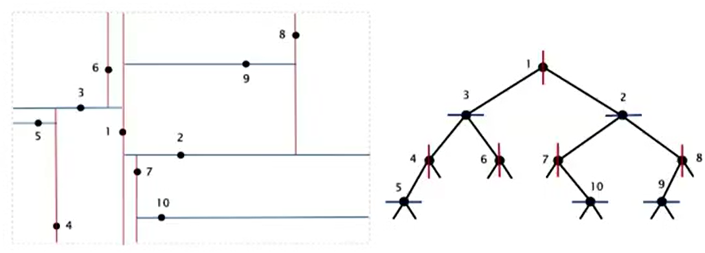
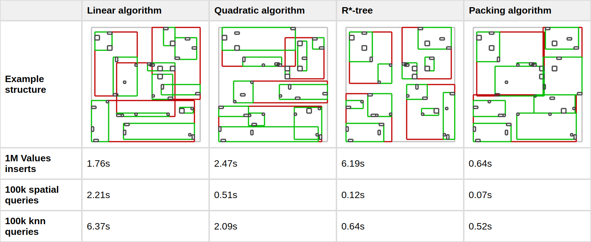
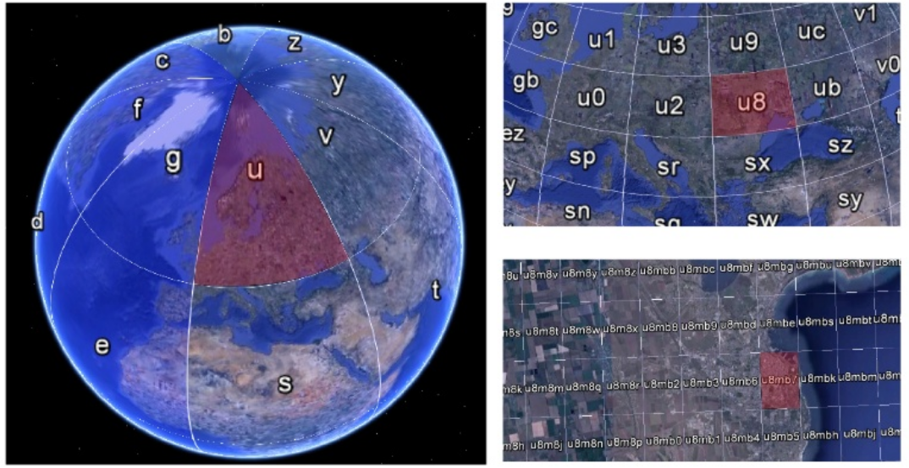
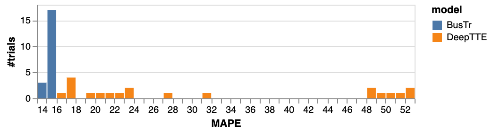
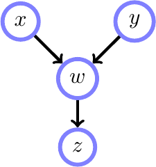
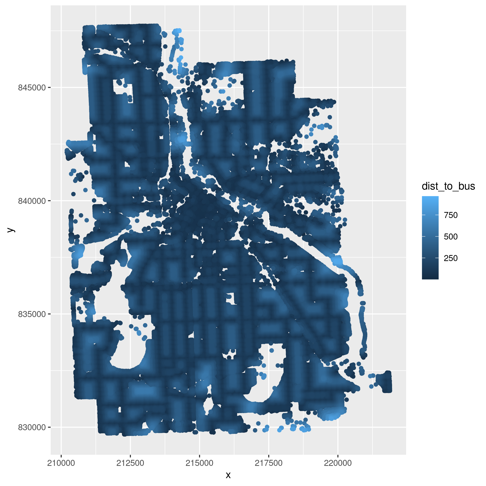

High-performance geocomputing
Outline
How do we make code go fast?
- Play to the strengths of our languages
- Understand the algorithms we use
- Manage our workflows intelligently
- Use a cluster
- Use a
betterfaster language - Make use of exotic hardware
- A peek at my work on scalabe terrain analysis
What are the strengths of our languages?
Programmer productivity
A bad idea...
for x in lst: #Python
do_work(x)
for(x in a){ #R
do_work(x)
}
A better idea: vectorization...
do_work_vectorized(lst) #Python
do_work_vectorized(lst) #R
Big-O Notation
aka Time/Space Complexity
(How does my algorithm behave?)
f(n) = 34n3+23n2+5*log(n)+23
g(n) = n3
How long to process 100,000 elements?
| Big-O | Total | Example |
|---|---|---|
| O(1) | 1 | Hash table |
| O(α(N)) | 4 | Disjoint-Set/Union-find |
| O(log N) | 17 | Binary search, Spatial Indices (Query) |
| O(N log N) | 1,660,964 | Sorting, Line Sweeps, Spatial Indices (Build) |
| O(N2) | 10,000,000,000 | All-pairs comparisons |
| O(N!) | ☹️☹️☹️☹️☹️ | Permutations, Combinatorics |
Preprocessing
vs
Queries
Preprocessing Example:
Road Network Routing

Nearest Neighbor
Find the nearest city
for pt in points:
dist = Inf
for city in cities:
dist = min(dist, getDistance(pt, city))
Spatial Indices
- k-d Trees
- R-Trees
- S2 Hashing
Big-O
| Algorithm | Construction | kNN Query | Space |
|---|---|---|---|
| k-d Tree | O(N log N) | O(k log N) | O(N) |
| R-Tree | O(N log N) | O(k log N) | O(N) |
| S2 Index | O(1) | O(N) | --- |
k-d Trees
k-d Trees

R-Trees
R-Trees


S2 Geometry
Like Geohashing

Hilbert Space-Filling Curve

ML Idea
- Generate embeddings (~4D) for a location's S2 cell ids
- Ids for building-, city-, province-, and country-sized regions
- Regularize to weight the larger-areas more heavily
Performance Comparison
Barnes et al (2020, "BusTr", arXiv:2007.00882)
Workflow Management
Directed Acyclic Graphs (DAGs)

Example Task
How far is every building in the city of Minneapolis from a bus stop?
Our Dag
- x = Unpack GTFS
- y = Unpack Buildings
- w = Geospatial Analysis
- z = Make fancy plots
Initial Directory Structure
. ├── original_data │ ├── minneapolis_buildings.zip │ └── minneapolis_gtfs.zip ├── scripts │ ├── get_building_distances.py │ └── plot_distances.R └── Snakefile
Find the nearest city
rule all:
input: "results/distances_map.png"
rule plot_distances:
input: "temp/building_distances.csv"
output: "results/distances_map.png"
shell:
"""
mkdir -p temp/
Rscript scripts/plot_distances.R
"""
rule get_distances:
input: "data/stops.txt", "data/BUILDINGS.shp"
output: "temp/building_distances.csv"
shell:
"""
mkdir -p temp/
python3 scripts/get_building_distances.py
"""
rule unpack_gtfs:
input: "original_data/minneapolis_gtfs.zip"
output: "data/stops.txt"
shell:
"""
mkdir -p data/
unzip -d data/ {input} stops.txt
"""
rule unpack_buildings:
input: "original_data/minneapolis_buildings.zip"
output: "data/BUILDINGS.shp"
shell:
"""
mkdir -p data/
unzip -d data/ {input}
"""
Find the nearest city
#!/usr/bin/env python3
from scipy.spatial import cKDTree
from shapely.geometry import Point
import geopandas as gpd
import pandas as pd
import sys
COMMON_CRS = "ESRI:102003"
stops = pd.read_csv("data/stops.txt")
stops = gpd.GeoDataFrame(
stops,
crs = "epsg:4326",
geometry = gpd.points_from_xy(stops.stop_lon, stops.stop_lat)
)
stops = stops.to_crs(COMMON_CRS)
buildings = gpd.read_file("data/BUILDINGS.shp")
buildings = buildings.to_crs(COMMON_CRS)
#Create k-d Tree index from stops
kd = cKDTree([(x,y) for x,y in zip(stops["geometry"].x, stops["geometry"].y)])
#Extract centroids of each building
centroids = pd.DataFrame([{"x":c.x, "y":c.y} for c in buildings["geometry"].centroid])
#Get distances from stops to centroids
centroids["dist_to_bus"], _ = kd.query(centroids)
centroids.to_csv("temp/building_distances.csv", index=False)
Find the nearest city
#!/usr/bin/env Rscript
library(dplyr)
library(ggplot2)
dat = read.csv("temp/building_distances.csv")
dat = dat %>% arrange(dist_to_bus)
p = ggplot(dat, aes(x=x, y=y)) + geom_point(aes(color=dist_to_bus))
ggsave("results/distances_map.png", p)
Final Directory Structure
.
├── data
│ ├── BUILDINGS.cpg
│ ├── BUILDINGS.dbf
│ ├── BUILDINGS.prj
│ ├── BUILDINGS.sbn
│ ├── BUILDINGS.sbx
│ ├── BUILDINGS.shp
│ ├── BUILDINGS.shp.xml
│ ├── BUILDINGS.shx
│ └── stops.txt
├── original_data
│ ├── minneapolis_buildings.zip
│ └── minneapolis_gtfs.zip
├── results
│ └── distances_map.png
├── scripts
│ ├── get_building_distances.py
│ └── plot_distances.R
├── Snakefile
└── temp
└── building_distances.csv
The Result
Vertical Slides
Slides can be nested inside of each other.
Use the Space key to navigate through all slides.
Basement Level 1
Nested slides are useful for adding additional detail underneath a high level horizontal slide.
Basement Level 2
That's it, time to go back up.
Slides
Not a coder? Not a problem. There's a fully-featured visual editor for authoring these, try it out at https://slides.com.
Pretty Code
import React, { useState } from 'react';
function Example() {
const [count, setCount] = useState(0);
return (
...
);
}
Code syntax highlighting courtesy of highlight.js.
Point of View
Press ESC to enter the slide overview.
Hold down the alt key (ctrl in Linux) and click on any element to zoom towards it using zoom.js. Click again to zoom back out.
(NOTE: Use ctrl + click in Linux.)
Auto-Animate
Automatically animate matching elements across slides with Auto-Animate.
Auto-Animate
Auto-Animate
Touch Optimized
Presentations look great on touch devices, like mobile phones and tablets. Simply swipe through your slides.
Fragments
Hit the next arrow...
... to step through ...
... a fragmented slide.
Fragment Styles
There's different types of fragments, like:
grow
shrink
fade-out
fade-right, up, down, left
fade-in-then-out
fade-in-then-semi-out
Highlight red blue green
Transition Styles
You can select from different transitions, like:
None -
Fade -
Slide -
Convex -
Concave -
Zoom
Themes
reveal.js comes with a few themes built in:
Black (default) -
White -
League -
Sky -
Beige -
Simple
Serif -
Blood -
Night -
Moon -
Solarized
Slide Backgrounds
Set data-background="#dddddd" on a slide to change the background color. All CSS color formats are supported.
Image Backgrounds
<section data-background="image.png">Tiled Backgrounds
<section data-background="image.png" data-background-repeat="repeat" data-background-size="100px">Video Backgrounds
<section data-background-video="video.mp4,video.webm">... and GIFs!
Background Transitions
Different background transitions are available via the backgroundTransition option. This one's called "zoom".
Reveal.configure({ backgroundTransition: 'zoom' })Background Transitions
You can override background transitions per-slide.
<section data-background-transition="zoom">Iframe Backgrounds
Since reveal.js runs on the web, you can easily embed other web content. Try interacting with the page in the background.
Marvelous List
- No order here
- Or here
- Or here
- Or here
Fantastic Ordered List
- One is smaller than...
- Two is smaller than...
- Three!
Tabular Tables
| Item | Value | Quantity |
|---|---|---|
| Apples | $1 | 7 |
| Lemonade | $2 | 18 |
| Bread | $3 | 2 |
Clever Quotes
These guys come in two forms, inline: The nice thing about standards is that there are so many to choose from
and block:
“For years there has been a theory that millions of monkeys typing at random on millions of typewriters would reproduce the entire works of Shakespeare. The Internet has proven this theory to be untrue.”
Intergalactic Interconnections
You can link between slides internally, like this.
Speaker View
There's a speaker view. It includes a timer, preview of the upcoming slide as well as your speaker notes.
Press the S key to try it out.
Export to PDF
Presentations can be exported to PDF, here's an example:
Global State
Set data-state="something" on a slide and "something"
will be added as a class to the document element when the slide is open. This lets you
apply broader style changes, like switching the page background.
State Events
Additionally custom events can be triggered on a per slide basis by binding to the data-state name.
Reveal.on( 'customevent', function() {
console.log( '"customevent" has fired' );
} );
Take a Moment
Press B or . on your keyboard to pause the presentation. This is helpful when you're on stage and want to take distracting slides off the screen.
Much more
- Right-to-left support
- Extensive JavaScript API
- Auto-progression
- Parallax backgrounds
- Custom keyboard bindings